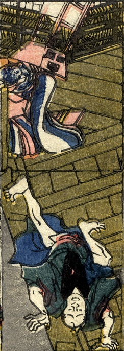

置行灯の化物。台座の部分が顔になっている。胴体は着物姿の女のようである。これを見た男が驚いて階段を転げ落ちている。
著作者：貞秀／出典：親書誌：U426_nichibunken_0227：新板化物づくし；シンパンバケモノヅクシ／日付：2010／資源識別子：U426_nichibunken_0227_0005_0000
Copyright (c)2010- International Research Center for Japanese Studies, Kyoto, Japan. All rights reserved.